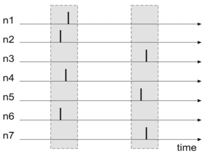

Machine Learning and Neural Networks
Roberto Santana and Unai Garciarena
Department of Computer Science and Artificial Intelligence
University of the Basque Country
Neural Network Paradigms: Table of Contents
Neuroevolution

Neural architecture search (NAS)
- A problem with NNs is how to set the architecture and parameters.
- It is usually based the user's experience or on trial and error.
- Automatically setting architecture and parameters is notoriously difficult.
- This is a very challenging problem and active research topic.
NAS approaches
- Reinforcement learning
- Heuristic optimization algorithms
- Neuroevolution
Neuroevolution
Evolving Neural Networks
Characteristics
- Neuroevolution investigates methods for automatic selection of neural network architectures and parameters.
- The neural architecture search is transformed into an optimization problem.
- Evolutionary algorithms are used to find the solution of the optimization problem.
- It is a very flexible approach that requires minimal human intervention.
- However, the methods may require a large number of evaluations.
D. Floreano, P. Duerr, and C. Mattiussi Neuroevolution: from architectures to learning Evolutionary Intelligence. No. 1. Pp. 47-62. 2008.
Neuroevolution: parameter search
Evolutionary Algorithms
- Evolutionary algorithms.
K. O. Stanley and R. Miikkulainen Competitive Coevolution through Evolutionary Complexification. Journal of Artificial Intelligence Research. Vol. 21. Pp. 63-100. 2004.
Evolutionary Algorithms
EAs
- Simple Genetic Algorithms (SGA)
- GAs with heuristic genetic operators
- Genetic Programming
- Estimation of Distribution Algorithms
- Evolutionary Strategies
- CMAEs
- Multi-objective EA with decomposition (MOEAD)
- Competent GAs
- Optimal Mixing EAs
Characteristics
- Each solution is represented using an individual or chromosome.
- A population of solutions is generated.
- Solutions are evaluated according to a fitness function .
- The solutions with the best fitness values are selected.
- New solutions are generated by applying crossover and mutation operators on the selected solutions.
- The population of individuals is evolved for a number of generations until a given stop criterion is satisfied.
A. E. Eiben and J. E. Smith. Introduction to Evolutionary Computing. Heidelberg: Springer. 2003.
NN optimization
Algorithms
- Neuro-evolution of augmenting topologies (NEAT).
- HyperNEAT.
- Spectrum-diverse Unified Neuroevolution Architecture (SUNA) .
- EPNet.
- Many others.
How to do it?
- Select a representation that encodes the NN in an appropriate way.
- Design the crossover operator in such a way that combines components of the two (parent) neural networks.
- Design a mutation operator that introduces potentially innovative variations in the generated solutions.
- Use a fitness function that estimates the quality of the NN.
- Decide on the rest of the EA components.
Neuro-evolution of augmenting topologies (NEAT)
Unbounded length genome
Characteristics
- NEAT is a neuroevolutionary algorithm.
- Combines the search for appropriate network weights with the complexification of the network structure.
- To avoid the creation of over-complex NNs, NEAT starts from a minimal structure and add nodes and connections incrementally.
- To avoid newly introduced NN structural changes to disappear from the population prematuraturely, it separates chromosomes in niches.
D. Floreano, P. Duerr, and C. Mattiussi Neuroevolution: from architectures to learning Evolutionary Intelligence. No. 1. Pp. 47-62. 2008.
K. O. Stanley and R. Miikkulainen Competitive Coevolution through Evolutionary Complexification. Journal of Artificial Intelligence Research. Vol. 21. Pp. 63-100. 2004.
NEAT representation
- In the NN representation the nodes and the connections are independently represented. Genome length is unbounded
- Connections contain the weights, whether it is disabled or not, and a time label (innovation) to indicate when it was introduced.
K. O. Stanley and R. Miikkulainen Competitive Coevolution through Evolutionary Complexification. Journal of Artificial Intelligence Research. Vol. 21. Pp. 63-100. 2004.
NEAT mutation

- Mutation can change both, mutation weights and network structures. The second can be done by adding connections or by adding nodes.
- Whenever a new gene appears a global innnovation number is increased and assigned to that gene.
K. O. Stanley and R. Miikkulainen Competitive Coevolution through Evolutionary Complexification. Journal of Artificial Intelligence Research. Vol. 21. Pp. 63-100. 2004.
NEAT crossover
- The genes of the two parents are matched according to their innovation numbers. Genes that do not match are either disjoint or excess. Each type of gene is randomly exchanged according to different rules.
K. O. Stanley and R. Miikkulainen Competitive Coevolution through Evolutionary Complexification. Journal of Artificial Intelligence Research. Vol. 21. Pp. 63-100. 2004.
Neuroevolution: NEAT application
Spiking Neural Networks
Neural network in the brain

Characteristics
- SNNs are formed by neuron models that communicate by sequences of spikes.
- The spiking dynamics of the neurons are described by differential equations
- Neurons are connected by artificial sypnases.
- They are powerful tools for analysis of elementary processes in the brain.
- Used for fast signal-processing, event detection, classification, speech recognition, or motor control.
- Computationally more powerful than perceptrons and sigmoidal gates.
F. Ponulak and A. Kasinski Introduction to spiking neural networks: Information processing, learning and applications. Acta neurobiologiae experimentalis 4.71. 2011.
Spiking Neural Networks
Neuronal behavior
Figure: J. Vreeken Spiking neural networks: an introduction. Research Report UU-CS-2003-008. Utrecht University Technical. 2002.
Spiking neuron model

H. Paugam-Moisy, S. Bohte. Computing with spiking neuron networks. Handbook of natural computing. Pp. 335-376. 2012.
Spiking Neural Networks
Spiking neuron model

H. Paugam-Moisy, S. Bohte. Computing with spiking neuron networks. Handbook of natural computing. Pp. 335-376. 2012.
Spiking Neural Networks
Spiking neuron model

H. Paugam-Moisy, S. Bohte. Computing with spiking neuron networks. Handbook of natural computing. Pp. 335-376. 2012.
Spikes and information processing
SNNs
- The presence and timing of individual neurons is considered as the means of comunication and neural computation .
- It has \(n\) input neurons whose firing times are determined through some external mechanism
- Different types of neuron models and information processing strategies can be used.
- Learning is usually harder than in MLP perceptrons and other non-spiking neural models.
H. Paugam-Moisy, S. Bohte. Computing with spiking neuron networks. Handbook of natural computing. Pp. 335-376. 2012.
Spikes and information processing

Neural code
- The problem of neural code: How is information encoded in the neural signal?
- Two (not necessarily contradictory) explanations:
- Spike rate code: Neural information is encoded in the firing rate (number of spikes in a given time period).
- Spike timing code: Neural information encoded in the precise timing of spikes.
- Spiking neural networks can be designed to exploit different ways of coding information in the neuron spikes.
H. Paugam-Moisy, S. Bohte. Computing with spiking neuron networks. Handbook of natural computing. Pp. 335-376. 2012.
Information Processing SNNs
Rank-order coding (ROC)
- Information is encoded by the order of the spikes of a neural population.
- The ROC model assumes that each neuron emits only a single spike during a presentation of the stimulus (image).
First spike
- The information is encoded in the latency between the beginning of the stimulus and the time of the first spike.
- Enables ultrafast information processing.

H. Paugam-Moisy, S. Bohte. Computing with spiking neuron networks. Handbook of natural computing. Pp. 335-376. 2012.
Information Processing SNNs
Coding by synchrony
- It is based on the assumption that neurons that encode different bits of information on the same object fire synchronously.
- Networks from reciprocally coupled spiking neurons can undergo very rapid transitions from uncorrelated to synchronized states. 
Latency code
- Information is in the exact timing of a set of spikes relative to each other.
- Precise relative spike timing is one of the critical parameters that control many forms of synaptic plasticity
- Very efficient in terms of information capacity.
Spiking Neural Networks Topologies
Recurrent networks
- Individual neurons or population of neurons interact through reciprocal (feedback) connections.
- Are characterized by richer dynamics and potentially higher computationally capabilities than feedforward networks.
- More difficult to control and train.
- Hybrid networks: some populations may be strictly feedforward, while other have recurrent topologies.
Feedforward networks
- The data-flow from input to output units is strictly one-directional.
- The data processing can extend over multiple layers of neurons.
- No feedback connections are present.
- Ussually applied to model low-level sensory systems (e.g. vision, olfaction, tactile sensing).
F. Ponulak and A. Kasinski. Introduction to spiking neural networks: Information processing, learning and applications. Acta neurobiologiae experimentalis. 4, 71. 2011.
Spiking Neural Networks Topologies

Reservoir computing
- It consists of a fixed recurrent structure (a reservoir) and a set of output neurons called readouts. The connectivity structure within the reservoir is usually random and fixed. Readouts receive only feedforward connections from the reservoir.
Figure. Neuromorphic devices & systems. IBM Research. Zurich.
Spiking Neural Networks Topologies: Synfire chains
- A multi-layered architecture (a chain) in which spiking activity can propagate as a synchronous wave of neuronal firing from one layer (subpopulation) to the next ones.
- Particular subpopulations may contain recurrent connections. Considered as a possible mechanism of the relationship between two delayed events.

Figure. S. Schrader, M. Diesmann, and A. Morrison. A compositionality machine realized by a hierarchic architecture of synfire chains. Frontiers in Computational Neuroscience 4. 154. 2011.
An NN Taxonomy

A. K. Jain, J. Mao, and K. M. Mohiuddin. Figure. Artificial neural networks: A tutorial. Computer. Vol. 29 No. 3. Pp. 31-44. 1996.